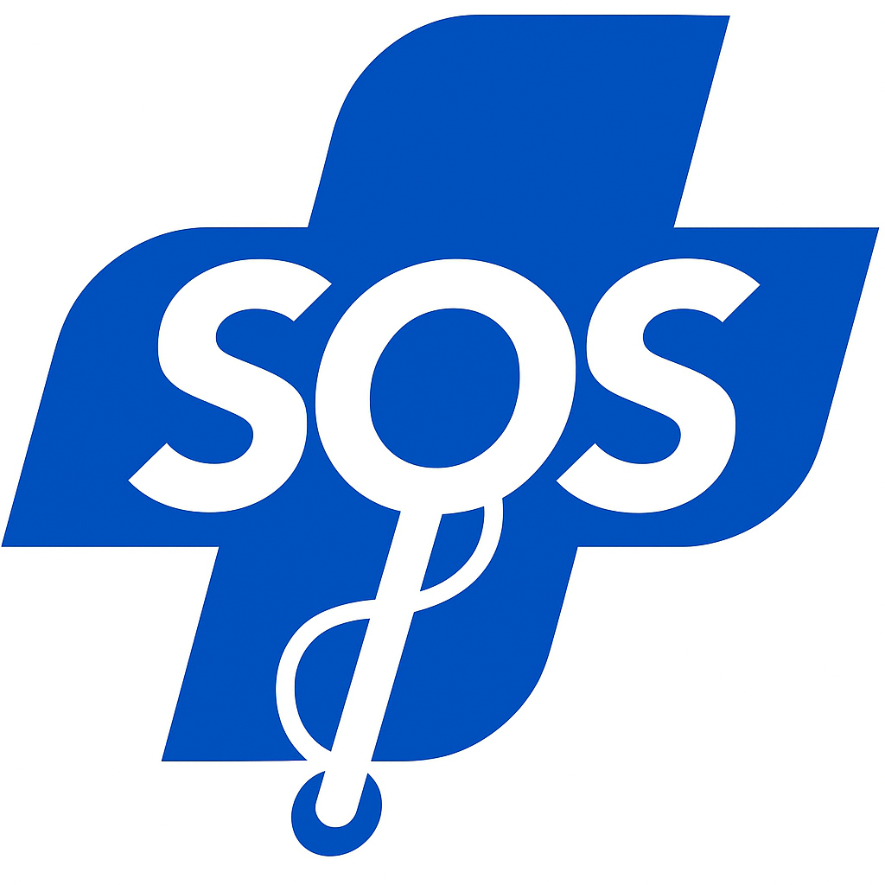
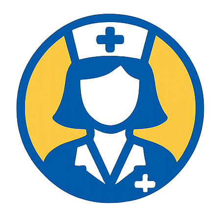
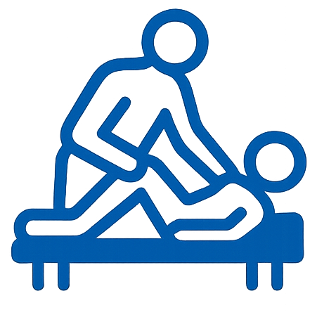
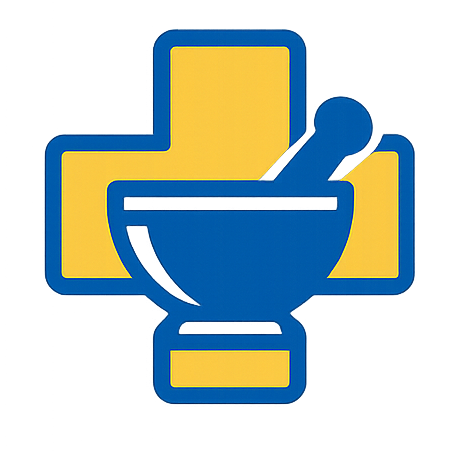

PARIS
Offrez le meilleur
accompagnement à vos proches
Découvrez nos services personnalisés d'aide à domicile, conçus pour répondre précisément aux besoins uniques de chaque personne âgée.
Découvrez nos services personnalisés d'aide à domicile, conçus pour répondre précisément aux besoins uniques de chaque personne âgée.
Contactez-nous dès aujourd'hui pour discuter de la manière dont nous pouvons améliorer la qualité de vie de vos proches grâce à nos services d'aide à domicile.
Prenez rendez-vous dès aujourd’hui par téléphone :
+33 6 05 87 37 35Chez Nena Adom, nous nous engageons à fournir un service d'accompagnement de fin de vie exceptionnel, apportant soutien, confort, et compassion à chaque étape du chemin. Faites le choix de la tranquillité d'esprit en nous choisissant comme partenaire dans cette étape délicate de la vie. Contactez-nous dès aujourd'hui pour en savoir plus sur nos services et comment nous pouvons accompagner vos proches.



